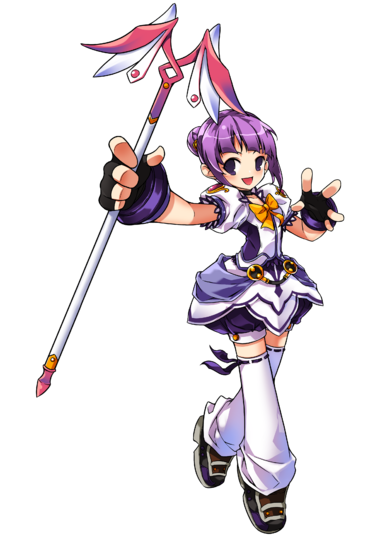
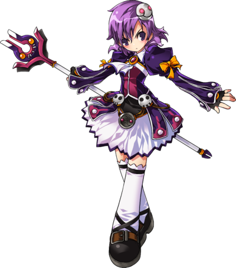
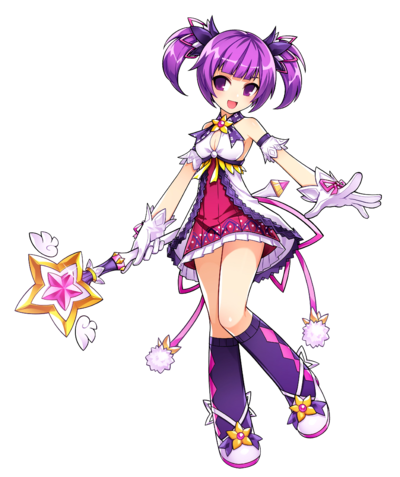

Maga Suprema |
|  |
La Maga suprema gana más poder ígneo, mejora sus bolas de fuego y expande
su reserva de maná. También logra entablar contacto con dos nuevos elementos,
el Hielo y el Rayo. Todas sus técnicas tienen diversas propiedades y causan
estados diversos tales como quemaduras y congelación. La Maga suprema puede
barrer grandes áreas de enemigos con su Granizo u objetivos individuales con
Proyectil mágico. Esto combinado con su gran daño mágico y sus bolas de fuego
de rango aumentado la hacen la clase perfecta para tener en grupo y cubrir tu
espalda. |
Maga Ocultista |
|  |
La Maga ocultista es un personaje que mezcla distancia y cuerpo a cuerpo,
utilizando el poder de la oscuridad para provocar gran daño mágico. Con su
refinada inteligencia y uso mágico, la Maga ocultista es capaz de realizar
grandes cantidades de daño, permitiendo la eliminación eficaz de sus enemigos.
Dedicando su vida a las artes mágicas, se vuelve más poderosa y versátil de lo
que nadie esperaba. Con unas buenas habilidades estratégicas, es un beneficio
tenerla en grupo. |
Maga de combate |
|  |
La Maga de combate está especializada en combate cerrado, sobresaliendo en
el combate cuerpo a cuerpo. Es capaz de realizar combos más avanzados con
su vara que sus otras clases. También logra controlar bolas de magia en estado
puro que tienen la capacidad de perforar al enemigo. Estas bolas se mueven
más lentas y tienen un menor alcance, aunque son capaces de atravesar a
múltiples objetivos, dañándolos continuamente. |